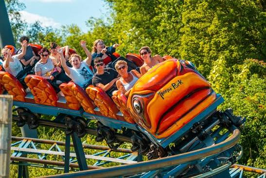

It is glazed to much for being the best coaster
remember people height != good woah python!!!!
the airtime is pretty good but the ride is 30 seconds long...
it decides to do this every other week!?!??!?!?

in my opinion the flying fish is the best mack rides gmbh & co kg product in the uk as its very thrilling!!!! who cares about icon, runaway mine train, storm chaser and whatever else we have!!!!
now i talk about monkey ride!!!
mandrill train funny cause the seats are yellow and its like mandrill is holding banana (i assume thats why the seats are yellow idk)

here is mandrill mayhem panel... people love gatekeeping pictures of panels!!?!??! they are very cringe